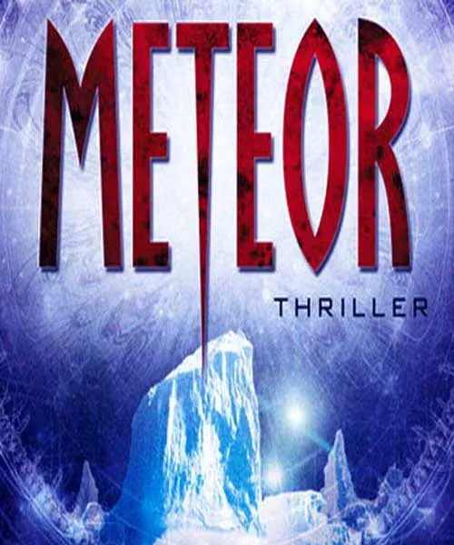
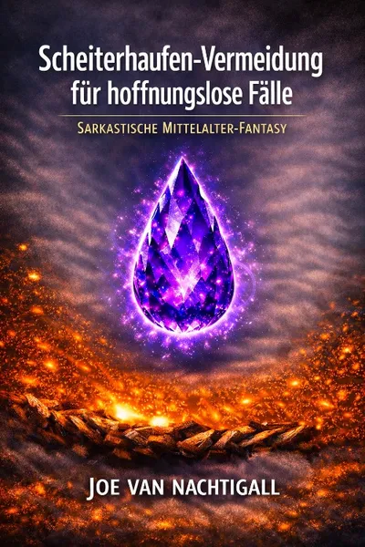

METEOR
Produktprofil · Marktplatz-Daten 2026-10-14 · Verkaufsseiten-Recherche 2026-10-14 · Kategorien: Fun & Games
- METEOR ist ein/e Hörbuch (Download) in Fun & Games, vertrieben über den Digistore24-Marktplatz von Anbieter Novaris_web, gelistet seit 2026-08-27.
- Listenpreis $9.35 (single payment) — Checkout, Auslieferung und Rückerstattungen laufen über Digistore24 selbst, nicht über den Anbieter.
- Käuferschutz: keine standardisierte Garantie-Formulierung gefunden — Rückerstattungsbedingungen vor der Zahlung auf der offiziellen Seite prüfen.
Interesse an METEOR? Aktueller Preis, Boni und Garantiebedingungen finden Sie auf der offiziellen Seite des Anbieters:
Offizielle Verkaufsseite ansehen
Affiliate-Link (Werbung) — wir verdienen ggf. eine Provision, ohne Mehrkosten für Sie.

Marktplatz-Daten
| Produkttyp | Hörbuch (Download) |
|---|---|
| Preis | $9.35 (Single payment) |
| Garantie/Rückgabe | Laut Verkaufsseite des Anbieters — vor dem Kauf auf der offiziellen Seite prüfen |
| Anbieter | Novaris_web (gelistet seit 2026-08-27) |
Marktplatz-Beschreibung des Anbieters
METEOR 386 MB, 6 Stunden Spielzeit Hörbuch €8,95 In Washington beginnt für Rachel Sexton ein hektischer Tag: Während eines Streits mit ihrem Vater über ihren Arbeitgeber erhält sie einen Anruf, dass sie ins NRO-Hauptquartier zum Direktor kommen soll. Von dort wird sie so gut wie kommentarlos per Hubschrauber auf einen Flughafen geschickt, wo die Air Force One mit Präsident Herney bereits auf sie wartet. Ohne wirklich viel zu erfahren oder eine Wahl zu bekommen, wird sie in einen Kampfjet gesteckt und schnellstens auf das Milne-Eisschelf der Ellesmere-Insel in der Arktis geflogen. Dort befindet sich eine geheime Forschungskuppel der NASA und sie erfährt, dass im Eis das Bruchstück eines Meteoriten gefunden wurde, in dem sich offenbar Fossilieneinschlüsse extraterrestrischer Herkunft befinden. Entdeckt wurde der Meteorit angeblich durch einen Satelliten des NASA Earth Observing System, der Dichtemessungen im arktischen Eis durchführen sollte und dabei eine Anomalie fand. Für die NASA wäre die Entdeckung, dass außerirdisches Leben existiert und es mit Meteoroiden auf die Erde kommen kann (Panspermia-Theorie), nach der ALH-84001- Pleite eine willkommene Rechtfertigung ihrer Existenz. Der Meteorit wird aus dem Eis geborgen, indem er durch einen Laser aufgeheizt wird und sich so einen Schacht freischmilzt. Die Bergung wird insgeheim durch ein Team der Delta Force mittels eines flugfähigen Miniaturroboters beobachtet. Als der Meteorit geborgen ist....
Von der Verkaufsseite des Anbieters
Seitentitel: Novaris - Meteor
Meta-Beschreibung: Novaris, Meteor, PDF und MP3. Gesundheit, Hörbuch, Technik, Lebenshilfe.
Hauptüberschrift
METEOR
Einstiegstext
In Washington beginnt für Rachel Sexton ein hektischer Tag: Während eines Streits mit ihrem Vater über ihren Arbeitgeber erhält sie einen Anruf, dass sie ins NRO-Hauptquartier zum Direktor kommen soll. Von dort wird sie so gut wie kommentarlos per Hubschrauber auf einen Flughafen geschickt, wo die Air Force One mit Präsident Herney bereits auf sie wartet.
Preisangaben auf der Seite: €8,95
CTA-Buttons: „Start"
Recherche-Methode: rohes HTML · 245 Wörter · Qualität: medium · recherchiert am 2026-10-14. Vollständige Recherche-Datei (MD) ↗
Wie Produkte dieser Art geliefert werden
Allgemeiner Hinweis zu diesem Produkttyp (keine anbieterspezifische Anleitung): Hörbücher werden direkt nach dem Checkout als digitaler Download (MP3) geliefert — auf jedem Gerät abspielbar. Für die genaue Anwendung von METEOR sind die offizielle Verkaufsseite und die enthaltenen Materialien maßgeblich.
Gut zu wissen
- Keine Garantie-Formulierung in unserer Recherche gefunden — bestätigen Sie das Rückgabefenster auf der offiziellen Seite, bevor Sie kaufen.
Was ist METEOR?
METEOR ist ein/e hörbuch (download) in der Kategorie Spaß & Spiele des Digistore24-Marktplatzes, veröffentlicht von Anbieter Novaris_web und im Verkauf seit 2026-08-27. Der Anbieter beschreibt es so: "METEOR 386 MB, 6 Stunden Spielzeit Hörbuch €8,95 In Washington beginnt für Rachel Sexton ein hektischer Tag: Während eines Streits mit ihrem Vater über ihren Arbeitgeber erhält sie einen Anruf, dass sie ins NRO-Hauptquartier zum Direktor kommen soll. Von dort " (Marktplatz-Beschreibung des Anbieters, leicht gekürzt).
METEOR Preis: was Sie zahlen
Der Marktplatz listet METEOR zum $9.35 Preis (single payment). Digistore24 fügt im Checkout die gesetzliche Steuer Ihres Landes hinzu — dort sehen Sie den Endbetrag vor der Zahlung. Die Verkaufsseite selbst nennt: €8,95 (Anbieteraussagen — verbindlich ist der Checkout-Betrag). Eine separate Plattformgebühr gibt es nicht; Anbieter können eigene Upsells nach dem Checkout anbieten.
METEOR Rückerstattung und Geld-zurück-Garantie
Wir haben keine standardisierte Garantie-Formulierung auf der Verkaufsseite gefunden. Rückerstattungen für Digistore24-Käufe laufen über die Plattform: Antrag über den Support-Link in Ihrer Bestell-E-Mail, innerhalb des Garantiezeitfensters, das im Checkout angezeigt wird. Praktischer Rat: Entscheiden Sie innerhalb des Fensters — wenn das Produkt unter den Erwartungen bleibt, erstatten lassen statt irren lassen.
Mechanik im Detail: So funktionieren Digistore24-Rückerstattungen.
Für wen ist METEOR geeignet?
Basierend auf der Spaß & Spiele-Einordnung und der single payment-Abrechnung richtet sich METEOR an Käufer, die spaß & spiele-Lösungen suchen zum Einstiegspreis. Der ehrliche Test ist nicht die Kategorie, sondern Ihre eigene Situation: Werden Sie es realistisch innerhalb des Garantiefensters nutzen? Wenn ja, ist der Preis eine Investition; wenn nein, ist er Ballast — unabhängig von der Qualität.
Ist METEOR seriös? Was Sie vor dem Kauf prüfen
Wir bewerten keine Seriosität — das kann niemand, ohne das Produkt zu nutzen. Prüfbare Punkte, alle auf dieser Seite: die Marktplatz-Historie des Anbieters (im Verkauf seit 2026-08-27), die wörtlichen Verkaufsseiten-Auszüge unten (gekennzeichnet als Anbieteraussagen — deren Werbung, nicht unsere Empfehlung), die Garantiebedingungen im Checkout und die Auslieferungsart. Vorsichtsignale bei jedem Angebot: Countdown-Dringlichkeit gepaart mit vagen Rückerstattungsbedingungen, Testimonials ohne Datum und Anbieterseiten, die den Preis bis zum Checkout verstecken.
Wie kommen Sie nach dem Kauf an METEOR?
Der Checkout läuft über Digistore24. Nach der Zahlung: Hörbücher werden direkt nach dem Checkout als digitaler Download (MP3) geliefert — auf jedem Gerät abspielbar. Bewahren Sie die Bestell-E-Mail auf — sie ist Ihr Schlüssel zum/d zur hörbuch (download), zu Rückerstattungsanträgen und zum Digistore24-Käufersupport.
METEOR Erfahrungen: so recherchieren Sie richtig
Die meisten „Erfahrungsberichte" zu Marktplatz-Produkten sind Affiliate-Inhalte — einschließlich Seiten wie dieser, die an Käufen mitverdienen. Behandeln Sie jeden Bericht (auch unseren) als Ausgangspunkt und prüfen Sie gegen Primärquellen: die Verkaufsseite des Anbieters, die Digistore24-Rückerstattungsrichtlinie und — für spaß & spiele — unabhängige Communities außerhalb des Affiliate-Ökosystems. Auf dieser Seite sind die Verkaufsseiten-Auszüge unten wörtlich zitiert, damit Sie die Aussagen des Anbieters bewerten können, ohne wegzuklicken.
Wie Sie METEOR sicher kaufen
- Öffnen Sie die offizielle Verkaufsseite und lesen Sie das vollständige Angebot.
- Bestätigen Sie Endpreis und Garantiezeitfenster auf der Digistore24-Kassenseite — sie ist bindend, kein Vergleichsportal.
- Zahlen Sie innerhalb des Digistore24-Checkouts (niemals per Überweisung oder Off-Platform-Links).
- Speichern Sie die Bestellbestätigung; notieren Sie die Rückerstattungsfrist im Kalender.
- Prüfen Sie zügig. Der Digistore24-Käufersupport hilft, wenn der Anbieter nicht reagiert.
Vollständiges Recherche-Archiv für dieses Produkt (Markdown: kompletter Marktplatz-Datensatz + wörtliche Verkaufsseiten-Auszüge): METEOR — vollständiges Datenarchiv (Markdown-Datei: 58733-meteor.md).
- Listenpreis & Abrechnung — Quelle: offizielle Digistore24-Marktplatz-API, Stand 2026-10-14. Maßgeblich für den aktuellen Preis ist immer die Kassenseite.
- Verkaufsseiten-Zitate — Quelle: https://novaris.de.cool/meteor.php, abgerufen 2026-10-14 (Methode: rohes HTML). Verify: offizielle Seite öffnen.
- Garantie / Rückgabe — vom Anbieter festgelegt; vor dem Kauf auf der Verkaufsseite bestätigen.
- Nicht von uns geprüft: Produktqualität, Ergebnisse, Testimonials — kein Praxistest für dieses Listing durchgeführt.
Häufige Fragen zu METEOR
Antworten aus dem Marktplatz-Snapshot (2026-10-14) und der Verkaufsseiten-Recherche (2026-10-14); Anbieteraussagen sind inline gekennzeichnet.
Was ist METEOR?
METEOR ist ein Angebot des Typs „Hörbuch (Download)" im Digistore24-Marktplatz, Anbieter: Novaris_web, gelistet seit 2026-08-27. Eingepflegt unter Spaß & Spiele. Digistore24 wickelt Checkout, Lieferung und Rückgaben ab.
Wie viel kostet METEOR?
Der Digistore24-Marktplatz listet es für $9.35 (single payment). Preise legt der Anbieter fest und können sich ändern — der Marktplatz-Eintrag oben zeigt den Schnappschuss; die offizielle Verkaufsseite zeigt den aktuellen Preis.
Gibt es eine Geld-zurück-Garantie für METEOR?
Unsere Verkaufsseiten-Recherche hat keine explizite Garantie-Formulierung gefunden. Viele Digistore24-Produkte bieten 60 Tage Geld-zurück, aber das legt jeder Anbieter selbst fest — bestätigen Sie es auf der offiziellen Verkaufsseite, bevor Sie kaufen.
Ist METEOR seriös?
Wir bewerten keine Seriosität — wir veröffentlichen überprüfbare Zahlen: Anbieter Novaris_web (gelistet seit 2026-08-27), mit der vollständigen Verkaufsseiten-Recherche archiviert auf dieser Seite (Anbieteraussagen als solche gekennzeichnet). Lesen Sie unsere 6-Punkte-Bewertungsmethode und entscheiden Sie anhand der Zahlen — oder diskutieren Sie METEOR auf GitHub.
Wo kann ich METEOR sicher kaufen?
Nur über die offizielle Verkaufsseite, die auf dieser Seite verlinkt ist (Checkout und Rückgaben laufen über Digistore24). Prüfen Sie dort Preis und Garantie vor der Bestellung. Der Link ist ein Affiliate-Link — der Kauf unterstützt diese Website ohne Mehrkosten für Sie.
Wie erhalte ich METEOR nach der Zahlung?
Der Checkout läuft über Digistore24: Nach der Zahlung erhalten Sie Ihren Zugang oder Download per E-Mail und in Ihrem Digistore24-Kundenkonto. Lieferdetails für diesen Produkttyp: Hörbücher werden direkt nach dem Checkout als digitaler Download (MP3) geliefert — auf jedem Gerät abspielbar. Bei Problemen kann der Digistore24-Käufersupport Ihre Bestellung wiederherstellen.
Alle 50 Käuferfragen zu Spaß & Spiele — das komplette Kategorie-FAQ.
METEOR auf Reddit diskutieren
In Community-Threads vergleichen echte Käufer Erfahrungen. Wir verlinken Communities, keine einzelnen Posts — Threads verschwinden, Subreddits bleiben:
- Reddit-Suche nach „METEOR" — Live-Ergebnisse, von uns nicht beeinflusst.
- Top-„Erfahrungs"-Treffer dieses Jahr — selbst nach Aktualität filtern.
Passendes auf Amazon.de
Physische Produkte und Zubehör, die häufig zusammen mit METEOR gekauft werden:
- Fun & Games auf Amazon.de — Top-Ergebnisse, Amazon-Ranking.
- Bestseller: Fun & Games — live Liste von Amazon, von uns nicht kuratiert.
Werbung: Als Amazon-Partner verdient DigistorePicks DE an qualifizierten Käufen (Partner-tag adminstorede-21). Amazon setzt eigene Preise und Provisionen (niedrige einstellige Prozente — weit unter den 30–75% der Digistore24-Anbieter). Amazon ist ein Convenience-Angebot für Sachprodukte, kein Ersatz für das digitale Produkt oben.
Ähnliche Angebote in Spaß & Spiele

Die RS Piano-Akademie bietet umfassende und interaktive Klavierkurse, die vom Anfänger- bis zum Fortgeschrittenenniveau reichen. Diese Kurse wurden entwickelt,

Verschenke unsere kostenlose Strategie-Anleitung & verdiene 50% wiederkehrende Provisionen ➤ DAS BIETEN WIR - Kostenlose Strategie-Anleitung statt direktem

RAUCHFREI FÜR IMMER Mit Struktur statt Willenskraft Rauchfrei werden – mit Struktur, mentaler Vorbereitung und klaren Schritten. Dieses Programm wurde aus eigen

Entdecke im Sketchnotes-Basiskurs, wie Du von Grund auf das Zeichnen von Sketchnotes erlernst – ideal fürs Lernen, zur Wissensvermittlung oder einfach zum Spaß:
Weitere Angebote von Novaris_web
Gesamtes Sortiment: Novaris_web Anbieter-Hub — alle Listings mit Marktplatz-Daten.

Fußreflexzonenmassage Entspannung beginnt bei den Füßen! Unsere Füße tragen uns jeden Tag durch das Leben. Sie sind ständig in Bewegung, werden belastet und bek

Die Botschaft der Zukunft Bundle: 19,90 € Hörbuch 12 Stunden PDF 287 Seiten Was wäre, wenn sich hinter den Ereignissen unserer Zeit mehr verbirgt, als wir auf d

D ie Geschichte der O, ein Hörbuch in natürlich weiblicher Sprache. Wegen seiner detaillierten Darstellung der Folgsamkeit des weiblichen Geschlechtes galt das

KÖRPERSPRACHE: Lesen und Verstehen. Als Bundle zusammen,- MP3 und PDF. Körpersprache verstehen – Menschen besser einschätzen, sicherer auftreten und sich selbst
Ähnliche Preislage in Spaß & Spiele
Hallo Lieber Affiliate Wenn du mein Buch bewirbst, darfst du dich auf 70% Provision pro verkauftem Buch (Taschenbuch) freuen :-) ...und dann 50% an den Folgever

Krimery.de – Das interaktive Krimidinner für zuhause Mit Krimery.de verwandelst du dein Wohnzimmer in den Schauplatz eines packenden Kriminalfalls! Unsere digit

Vídeos ads for promotions. 74 Seiten XXL Malbuch: Deutsche Nationalmannschaft 2026 - Zum Ausmalen für echte Fußballfans

in sarkastisches Mittelalter‑Fantasy‑E‑Book mit extrem hoher Leserbindung. Ideal für Zielgruppen, die Humor, Magie, bissige Protagonistinnen und chaotische Aben
Ähnliche Suchanfragen
Wo Sie es sich ansehen können
Wo Sie es sich ansehen können
Aktuelle Preise, Garantie und Boni finden Sie auf der offiziellen Verkaufsseite:
Offizielle Verkaufsseite ansehen
Das ist ein Affiliate-Link (Werbung) — kaufen Sie darüber, verdienen wir ggf. eine Provision, ohne Mehrkosten für Sie.
Quellen & weiterführende Informationen
- Offizielle Verkaufsseite (aktueller Preis, Garantie, Boni): novaris.de.cool/meteor.php (Affiliate-Link)
- Öffentliche Digistore24-Produktseite: checkout-ds24.com/product/717233
- Vollständige Recherche-Datei (Markdown, versioniert): content/products/58733-meteor.md
- Marktplatz-Kategorie: Spaß & Spiele
Wie wir Produkte wie METEOR bewerten
Sechs Prüfungen, ausschließlich mit offiziellen Marktplatz-Zahlen. Die vollständige Bewertungsmethode lesen · unsere Recherche-Standards & Kennzeichnung.
Fragen oder eigene Erfahrungen mit METEOR?
Praxis-Tests veröffentlichen wir erst, nachdem wir ein Produkt selbst gekauft haben — aber Ihre Erfahrung hilft anderen Lesern: Diskussion zu METEOR auf GitHub starten/verfolgen. Falsche Zahl gefunden? Korrektur melden — jede Seite zeigt ihre Datenstände, Korrekturen gelten für die ganze Website.